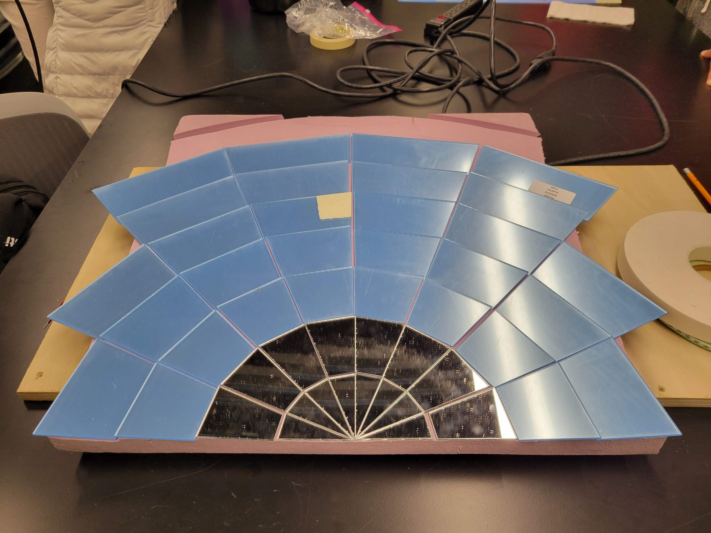
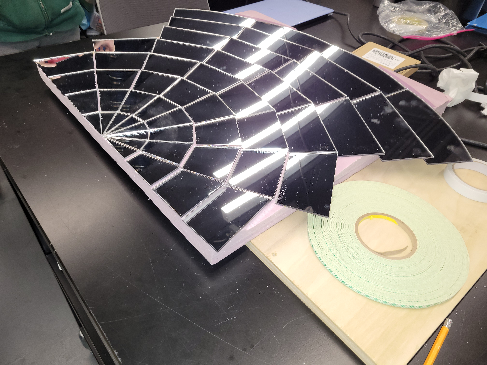

## Week 4
### Monday-Oct 3
I was a part of the group that was observing and assembling the laser cut pieces for our prototype reflector. Almost all of the reflector was finished, and here's a picture below of the progress made plus a video of the laser cutter in action.

<video controls>
<source src="./20221003_154114.mp4" type="video/mp4">
</video>
### Wednesday-Oct 5
We finished assembling the prototype reflector and tested it out a bit by examing the flight spread and distance of the focal point for future testing.

Then we went to 3-001 and looked at the 3D printers over there, and I tried to help assemble the already printed parts, which had a little bit of progress done.